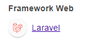
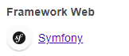

PHP wrappers
Many web applications in PHP are built with PHP frameworks:
◇ Laravel
▪ Wappalyzer
 ◇ Symfony
▪ Wappalyzer
 ◇ ...
Once found a LFI vulnerability in PHP webapp, we can utilize
PHP Wrappers to extend our LFI exploitation to reach:
◇
RCE (THIS)
◇
PHP Source Code DisclosurePHP Wrappers allow to access I/O streams at the application level:
◇ standard input/output
◇ file descriptors
◇ memory streams
◇ ...